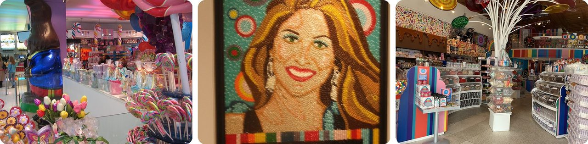
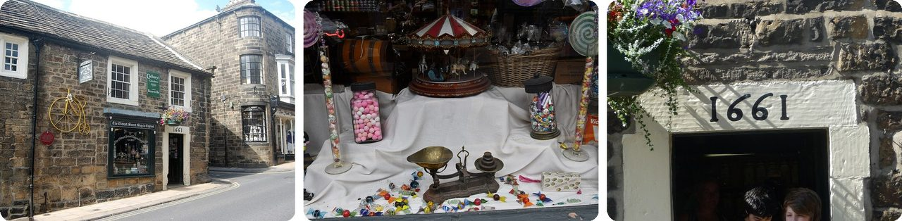

🌍 十大 世界各地有名、好玩又奇怪的糖果店
2026年11月27日
1. 🏴 伦敦的 M&M's 世界是地球上最大的糖果店
 2011 年 6 月 13 日，M&M's 世界在伦敦的莱斯特广场开张了。它大约有 35,000 平方英尺，是全世界最大的糖果店，差不多有 12 个网球场那么大。
2011 年 6 月 13 日，M&M's 世界在伦敦的莱斯特广场开张了。它大约有 35,000 平方英尺，是全世界最大的糖果店，差不多有 12 个网球场那么大。
当时，伦敦想把这个广场改造成一个“世界级的目的地”，学的是纽约时代广场的大改造。于是，一家超大的糖果店搬进了原来的瑞士中心大楼。
它可不是唯一的一家。第一家 M&M's 世界 1997 年开在拉斯维加斯大道上，纽约的那家还有一面两层楼高的“巧克力墙”，由 72 根装满糖果的管子组成。
这家糖果店大到可以在里面办一场网球赛。
2. 🇺🇸 迪伦糖果吧是从一个威利·旺卡生日开始的

时装设计师拉尔夫·劳伦的女儿迪伦·劳伦，六岁生日那天看了电影《欢乐糖果屋》（威利·旺卡和巧克力工厂）。很多年后，2001 年，她在纽约开了自己的糖果店。迪伦糖果吧大约有 7,000 种糖果，来自世界各地。劳伦说，她想把时尚、艺术和糖果文化混在一起。
最多的时候，它有 20 多家店。2021 年，它在曼哈顿上东区的大店因为资金问题关门了，不过这个牌子在纽约和洛杉矶还有店。
说白了，一个小孩看电影做的梦，长大后变成了一家真的糖果店。
3. 🇺🇸 好时巧克力世界有个免费游乐项目，里面的奶牛会唱歌
 宾夕法尼亚州的好时镇，以前会让游客参观真正的巧克力工厂。结果来的人太多，工厂实在接待不过来，于是 1973 年 6 月 30 日，好时开了巧克力世界来代替。
宾夕法尼亚州的好时镇，以前会让游客参观真正的巧克力工厂。结果来的人太多，工厂实在接待不过来，于是 1973 年 6 月 30 日，好时开了巧克力世界来代替。
这里最主要的项目是一趟免费的游乐车，一步一步给你看巧克力是怎么做出来的。现在车上有会唱歌的奶牛，坐完还能拿到一份免费的好时小零食。
1988 年，这趟游乐车请来了一个叫 CP-1 的机器人主持，可它不到一年就下岗了。与此同时，巧克力世界光是第一年就来了 140 万游客。
你可以把它想成一个最后送你甜点的游乐园项目。
4. 🇺🇸 大西洋城的太妃糖店曾经用牡蛎盒子装糖
 到 1880 年，新泽西州大西洋城木板路上的糖果摊已经在卖太妃糖了，这是一种又软又有嚼劲的糖。有个很流行的说法：一场风暴把海水泼到了太妃糖摊上，摊主干脆把它叫作“咸水太妃糖”来卖。这个故事很可能是编的。
到 1880 年，新泽西州大西洋城木板路上的糖果摊已经在卖太妃糖了，这是一种又软又有嚼劲的糖。有个很流行的说法：一场风暴把海水泼到了太妃糖摊上，摊主干脆把它叫作“咸水太妃糖”来卖。这个故事很可能是编的。
约瑟夫·弗拉林格以前吹过玻璃、卖过鱼，1884 年他接手了一个太妃糖摊。他想到一个点子：把太妃糖装进一磅装的盒子，当纪念品卖。
第一个周末，他买了 200 个盒子，到星期天中午就卖光了。他只好跑到附近一家海鲜餐馆，用装牡蛎的盒子把那天剩下的糖卖完。今天，木板路上还有从 19 世纪开到现在的太妃糖店。
换句话说，这是一种海边纪念品，名字来自一场很可能根本没发生过的风暴。
5. 🏴 英格兰最老的糖果店从 1827 年开到现在

在北约克郡的小镇帕特利布里奇，有一家店就叫“英格兰最老的糖果店”。它在 1827 年开张，明年就满 200 岁了。这栋房子更老。它建于 1661 年，所以糖果店开张的时候，房子已经 166 岁了。
2014 年，吉尼斯世界纪录把它列为全世界连续营业时间最长的糖果店。店里到现在还卖老式零食，比如茴香糖球、甘草糖和酸粉飞碟糖。
这家糖果店已经招待了大约八代小朋友。
6. 🇸🇪 一位寡妇的薄荷糖棍，把瑞典小镇变成了糖果乐园
 1858 年，阿玛莉亚·埃里克松刚生完孩子没几天，丈夫就去世了，只剩她一个人带着刚出生的女儿。那时候，瑞典女人想自己做生意非常难。但小镇会给穷困的寡妇特别许可，所以 1859 年 1 月 10 日，格兰纳镇允许她卖糖。
1858 年，阿玛莉亚·埃里克松刚生完孩子没几天，丈夫就去世了，只剩她一个人带着刚出生的女儿。那时候，瑞典女人想自己做生意非常难。但小镇会给穷困的寡妇特别许可，所以 1859 年 1 月 10 日，格兰纳镇允许她卖糖。
她做的是波尔卡猪糖（polkagris），一种红白相间的薄荷糖棍。名字的意思是“波尔卡猪”：波尔卡是一种转圈圈的舞，“猪”是当时对糖果的老俗语。糖团先煮，再用手拉长、拧成麻花。她一直把配方保密，直到 99 岁去世。
现在格兰纳只有大约 2,500 个居民，每年却有一百多万游客，镇上大约有 20 家店在卖波尔卡猪糖。
说白了，一个女人的糖，把整个小镇变成了一家糖果店。
7. 🇦🇹 维也纳的德梅尔为了一块巧克力蛋糕跟酒店打官司
 德梅尔 1786 年在维也纳开张。1874 年，皇帝封它为皇家宫廷的官方甜点师，伊丽莎白皇后（大家叫她茜茜）也是这里的客人。
德梅尔 1786 年在维也纳开张。1874 年，皇帝封它为皇家宫廷的官方甜点师，伊丽莎白皇后（大家叫她茜茜）也是这里的客人。
这里的女服务员到现在还用一种老派、超级客气的方式跟客人说话。她们不说“您选好了吗？”，而是说类似“阁下已经选好了吗？”这样的话。
后来就是蛋糕大战。萨赫酒店和德梅尔都在卖一种叫萨赫蛋糕的巧克力蛋糕，1954 年酒店把德梅尔告上了法庭。双方吵了整整七年，争的是名字、中间那层果酱之类的事。1963 年，酒店拿到了“原版萨赫蛋糕”这几个字，德梅尔拿到了一个三角形的巧克力印章。
你可以把它想成两家甜点店为了一块蛋糕拔了七年河。
8. 🇹🇷 伊斯坦布尔的哈吉·贝基尔说，它在 1777 年发明了土耳其软糖
 1777 年，一位叫贝基尔的糖果师傅在伊斯坦布尔开了一家小糖果店。他去麦加朝圣回来后，大家就开始叫他“哈吉”，这是对去过麦加朝圣的人的称呼。
1777 年，一位叫贝基尔的糖果师傅在伊斯坦布尔开了一家小糖果店。他去麦加朝圣回来后，大家就开始叫他“哈吉”，这是对去过麦加朝圣的人的称呼。
店里说，是贝基尔发明了现代的土耳其软糖（lokum），一种裹着糖粉的软软的果冻小方块。店里的说法是，他把面粉换成了淀粉，糖就变得又滑又有嚼劲。历史学家可没那么肯定：类似的波斯甜点早了好几百年，也没有真正的证据证明是他发明的。
不管怎样，奥斯曼皇宫都从这家店买甜点，贝基尔还被封为皇宫的首席糖果师。现在经营这家店的，已经是他家的第五代了。
换句话说，这家店为一种糖骄傲了快 250 年。
9. 🇧🇷 里约的哥伦布甜品店看起来像一座镜子宫殿
 1894 年，两个葡萄牙移民在里约热内卢市中心开了哥伦布甜品店，既卖甜点也是咖啡馆。
1894 年，两个葡萄牙移民在里约热内卢市中心开了哥伦布甜品店，既卖甜点也是咖啡馆。
1912 年到 1918 年间，他们在店里装满了从比利时安特卫普运来的巨大水晶镜子，镜框是雕花的红木。1922 年，他们又加盖了二楼的茶室，一楼天花板上开了个洞，抬头就能看到茶室的彩色玻璃天窗。
太多有名的作家和艺术家在这儿聚会，大家都叫它“巴西文学院的分院”。总统、一位比利时国王和英国女王伊丽莎白二世也都来过。
这是一家打扮得像舞厅的甜点店。
10. 🇯🇵 日本的駄菓子屋卖“不值钱”的糖给小孩
 駄菓子（dagashi）是日本的便宜糖果和零食，駄菓子屋（dagashiya）就是卖这些东西的小店。这个名字大概的意思是“不值钱的零食”。每样大约 10 到 200 日元，小孩的零花钱就买得起。
駄菓子（dagashi）是日本的便宜糖果和零食，駄菓子屋（dagashiya）就是卖这些东西的小店。这个名字大概的意思是“不值钱的零食”。每样大约 10 到 200 日元，小孩的零花钱就买得起。
这些零食是专门为小孩设计的。鲜艳的包装上印着吉祥物，让还不认字的小朋友也能挑到自己喜欢的；有的还送小玩具，或者有机会再赢一包免费零食。有一种叫“笛子拉姆内”（Fue Ramune）的糖，还能吹出口哨声。
从 20 世纪 50 年代到 80 年代初，駄菓子屋是放学后大家最爱去的地方。到了 80 年代后期，小孩手里的零花钱多了，很多駄菓子屋就被便利店取代了。
所以说，这是一家按小孩零花钱大小开的糖果店。
趣闻
德梅尔和萨赫酒店抢的那块蛋糕，可能是一个少年发明的。有个说法是，1832 年，弗朗茨·萨赫为梅特涅亲王做出了萨赫蛋糕，那时他才 15 或 16 岁，还在当学徒。这个年份没有书面证据，不过他的儿子爱德华多年后也这么说。小孩和少年发明的食物，可以是下一个甜甜的主题。
图片来源（Wikimedia Commons）
- #1: M&M'S London Wall of M&M'S Picture 2.jpg by Mepatm, CC BY-SA 4.0
- #1: M&M's World, London 1.jpg by Philafrenzy, CC BY-SA 4.0
- #1: M&M'S London Facade.jpg by Mepatm, CC BY-SA 4.0
- #2: Dylan's Candy Bar, New York City (1628512247).jpg by Casper Moller from London, United Kingdom, CC BY 2.0
- #2: Dylan's Candy Bar candy artwork (flickr) by Rachel from Cupcakes Take the Cake, CC BY 2.0
- #2: Dylan's Candy Bar, Miami.jpg by Phillip Pessar, CC BY 2.0
- #3: Hershey Chocolate World, Hersheypark, 2013-08-10.jpg by Paulo Ordoveza from Washington, DC, Public domain
- #3: 2015-09-30 Chocolate World Roaster.jpg by Hmich176, CC BY-SA 4.0
- #3: Hershey's Chocolate World interior.jpg by Toohool, CC BY-SA 4.0
- #4: James Saltwater Taffy Shop.jpg by Concord, CC BY-SA 4.0
- #4: Salt Water Taffy Stretching and Wrapping Machines.jpg by Visitor7, CC BY-SA 3.0
- #4: Colourful wrapped salt water taffy (3747358050).jpg by Lara604 from Seattle, WA, CC BY 2.0
- #5: The Oldest Sweet Shop in England, High Street, Pateley Bridge - geograph.org.uk - 4621491.jpg by Bill Harrison, CC BY-SA 2.0
- #5: Pateley Bridge High Street, 'The Oldest Sweet Shop in England' window display - geograph.org.uk - 7887746.jpg by Michael Garlick, CC BY-SA 2.0
- #5: Oldest Sweet Shop of England 02.JPG by Immanuel Giel, CC BY-SA 3.0
- #6: Making polkagrisar.jpg by Niklas Morberg, CC BY-SA 2.0
- #6: Polkagrisar in Granna.jpg by Niklas Morberg, CC BY-SA 2.0
- #6: Flickr - cyclonebill - Polkagris.jpg by cyclone bill, CC BY-SA 2.0
- #7: Wien-Kohlmarkt-48-Nr 14-Cafe Demel-2009-gje.jpg by Gerd Eichmann, CC BY-SA 4.0
- #7: Demel Vienna 2011.jpg by E-W, CC BY-SA 3.0
- #7: Wien-Kohlmarkt-44-Nr 14-Cafe Demel-2009-gje.jpg by Gerd Eichmann, CC BY-SA 4.0
- #8: Ali Muhiddin Hacı Bekir (1777).jpg by rg-fotos, CC BY-SA 2.0
- #8: Marzipan and lokum.jpg by E4024, CC BY-SA 4.0
- #8: Hacı Bekir - Kadikoy.jpg by E4024, CC BY-SA 4.0
- #9: Confeitaria Colombo (2) (6738795079).jpg by Leandro Neumann Ciuffo, CC BY 2.0
- #9: Confeitaria Colombo.JPG by Eugenio Hansen, OFS, CC BY-SA 3.0
- #9: Confeitaria Colombo, Rio.JPG by Eugenio Hansen, OFS, CC BY-SA 3.0
- #10: Dagashiya Isobe-Shouten Oct 2025.jpg by Chacmool, CC BY-SA 4.0
- #10: Dagashi-ya-no-yume-museum1.jpg by Jason1208, CC BY-SA 3.0
- #10: Itohikiame.png by Mozzucu, CC BY 4.0


.jpg){kind=link}


.jpg){kind=link}


.jpg){kind=link}


_(6738795079).jpg){kind=link}